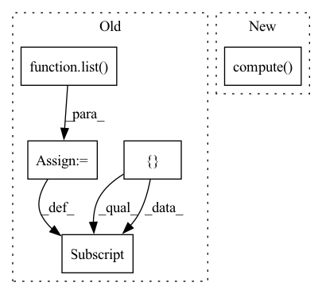

Pattern ID :4422

Before Change
else:
hashed_cross_op = ops.HashedCross([cat_names], [num_buckets])
columns_ctx = {}
columns_ctx["categorical"] = {}
columns_ctx["categorical"]["base"] = list(cat_names)
// check sums for determinancy
checksums = []
for gdf in dataset.to_iter():
After Change
dataset = nvt.Dataset(df)
processor = nvtabular.Workflow(hashed_cross)
processor.fit(dataset)
new_gdf = processor.transform(dataset).to_ddf().compute()
// check sums for determinancy
new_column_name = "_X_".join(cat_names[0])
assert np.all(new_gdf[new_column_name].values >= 0)
In pattern: SUPERPATTERN
Frequency: 3
Non-data size: 5
Instances
Fragment ID: 16215431
Project Name: nvidia/nvtabular
Commit Name: 4c92dffac4354d816178264bcfcdec722db2ec1c
Time: 2021-01-05
Author: github@benfrederickson.com
File Name: tests/unit/test_ops.py
M Class Name: AnonimousClass
N Class Name: AnonimousClass
M Method Name: test_hashed_cross(5)
N Method Name: test_hashed_cross(6)
M Parent Class:
N Parent Class:
M File Name: tests/unit/test_ops.py
N File Name: tests/unit/test_ops.py
M Start Line: 1058
M End Line: 1085
N Start Line: 659
N End Line: 674
'>
Before Change
def map(self):
Returns the specified metrics
results = self.metric.compute()
dict_results = {}
for key, value in results.items():
if len(list(value.size())):
dict_results[key] = list(value)
else:
dict_results[key] = float(value)
return dict_results
After Change
def map(self):
Returns the specified metrics
return self.compute()
def map_50(self):
Returns the specified metrics
self.metric.iou_thresholds = [0.5]
'>
Fragment ID: 16215421
Project Name: biasvariancelabs/aitlas
Commit Name: 7f03e92a058dc9779f2cdc814712ead34b4c899a
Time: 2023-01-15
Author: ivica.dimitrovski@yahoo.com
File Name: aitlas/base/metrics.py
M Class Name: ObjectDetectionRunningScore
N Class Name: ObjectDetectionRunningScore
M Method Name: map(1)
N Method Name: map(1)
M Parent Class: object
N Parent Class: object
M File Name: aitlas/base/metrics.py
N File Name: aitlas/base/metrics.py
M Start Line: 315
M End Line: 322
N Start Line: 332
N End Line: 332
'>
Before Change
else:
bucketize_op = ops.Bucketize(boundaries, cont_names)
columns_ctx = {}
columns_ctx["continuous"] = {}
columns_ctx["continuous"]["base"] = list(cont_names)
for gdf in dataset.to_iter():
new_gdf = bucketize_op.apply_op(gdf, columns_ctx, "continuous")
for col, bs in zip(cont_names, boundaries):
assert np.all(new_gdf[col].values >= 0)
After Change
bucket_features = cont_names >> bucketize_op
processor = nvtabular.Workflow(bucket_features)
processor.fit(dataset)
new_gdf = processor.transform(dataset).to_ddf().compute()
for col, bs in zip(cont_names, boundaries):
assert np.all(new_gdf[col].values >= 0)
assert np.all(new_gdf[col].values <= len(bs))
'>
Fragment ID: 16215433
Project Name: nvidia/nvtabular
Commit Name: 4c92dffac4354d816178264bcfcdec722db2ec1c
Time: 2021-01-05
Author: github@benfrederickson.com
File Name: tests/unit/test_ops.py
M Class Name: AnonimousClass
N Class Name: AnonimousClass
M Method Name: test_bucketized(5)
N Method Name: test_bucketized(6)
M Parent Class:
N Parent Class:
M File Name: tests/unit/test_ops.py
N File Name: tests/unit/test_ops.py
M Start Line: 1089
M End Line: 1107
N Start Line: 680
N End Line: 692